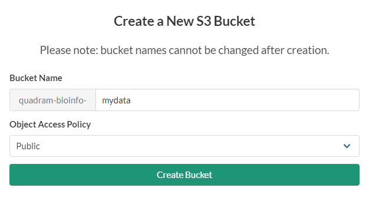

Transferring data from CLIMB VMs to S3 Buckets#
This is a dedicated guide if you are moving from using CLIMB VMs to the new notebook model. Here we will show you how to get s3cmd setup on your VM, create a bucket, and how to transfer data from your VM to S3.
Tip
This will work on any Linux machine, not just CLIMB VMs.
What is S3?#
S3 is a cloud-based object storage service. An S3 bucket is a fundamental container for storing and organizing data in S3. It is conceptually similar to a directory or folder in a file system, but it is designed to store objects (files) in a highly scalable and durable manner.
Installing s3cmd#
You will need to install s3cmd on your CLIMB VM. You can do this using python pip. I have installed it in a Conda environment but you can install s3cmd anywhere. For example,
conda create -n s3cmd -y
conda activate s3cmd
pip install -U s3cmd
Configuring s3cmd#
You will need to configure s3cmd to use your CLIMB S3 credentials. You can do this by running the following command:
s3cmd --configure
This will then take you through a series of prompts. You can accept the defaults for all of these except for the following:
Access Key: Your access key, as displayed in BRYN
Secret Key: Your access key, as displayed in BRYN
S3 Endpoint [s3.amazonaws.com]: s3.climb.ac.uk
DNS-style bucket+hostname:port template for accessing a bucket [%(bucket)s.s3.amazonaws.com]: %(bucket)s.s3.climb.ac.uk
Your access and secret keys are unique to you and can be found in BRYN. These are available in the S3 buckets section of BRYN. Click on the API keys button to reveal your keys.
Step through all the other prompts. If the configuration is successful, you should be able to list your buckets, with s3cmd ls
s3cmd ls
Creating a bucket#
If you have not created a bucket for your data, you should do so now in the BRYN interface. You can do this by clicking on the New bucket button.
The create bucket interface will then appear. You should give your bucket a name. You can also choose to make your bucket public.

A worked example#
Now with s3cmd ready to go, I will demonstrate how to transfer data with a worked example. This worked example uses my own (important) data, that I am transferring from my VM to S3. I have a output of a recent run of ClonalFrameML on my VM, and I want to transfer it to S3.
We will need to correct name for our bucket which we can see using s3cmd ls
s3cmd ls
Will give a list of buckets like;
2023-07-21 08:50 s3://quadram-bioinfo-training
Here is the directory listing of my data I want to transfer:
(s3cmd) ubuntu@chomp:~/scratch/nabil_back$ ls clonal_heidl/ -Rl
clonal_heidl/:
total 3513600
-rwxr-xr-x 1 ubuntu ubuntu 3546608056 Apr 14 2020 clean.full.aln
-rwxr-xr-x 1 ubuntu ubuntu 37881459 Apr 14 2020 clonal.ML_sequence.fasta
-rwxr-xr-x 1 ubuntu ubuntu 66719 Apr 14 2020 clonal.em.txt
-rwxr-xr-x 1 ubuntu ubuntu 15947 Apr 14 2020 clonal.importation_status.txt
-rwxr-xr-x 1 ubuntu ubuntu 32169 Apr 14 2020 clonal.labelled_tree.newick
-rwxr-xr-x 1 ubuntu ubuntu 9671724 Apr 14 2020 clonal.position_cross_reference.txt
-rwxr-xr-x 1 ubuntu ubuntu 28846 Apr 14 2020 iqtree_fast.treefile
To transfer this to S3, we can use the s3cmd sync command. This will transfer the data to S3, and will only transfer files that have changed.
The syntax for s3cmd sync is s3cmd sync <source> <destination>. In this case, we want to transfer the data from our VM to S3, so we will use the following command:
s3cmd sync clonal_heidl/ s3://quadram-bioinfo-training/clonal_heidl/
Note
The destination is the bucket address we saw earlier, with s3cmd ls.
Warning
The last slash for folder name after the bucket name is important. It is how s3cmd knows you want to transfer into a folder. If you miss this off, you will get an error message like this:
Parameter problem: Destination S3 URI must end with '/' (ie must refer to a directory on the remote side).
The transfer will now begin. You will see a progress bar for each file that is transferred.
(s3cmd) ubuntu@chomp:~/scratch/nabil_back$ s3cmd sync clonal_heidl/ s3://quadram-bioinfo-training/clonal_heidl/
upload: 'clonal_heidl/clean.full.aln' -> 's3://quadram-bioinfo-training/clean.full.aln' [part 1 of 226, 15MB] [1 of 8]
15728640 of 15728640 100% in 1s 9.95 MB/s done
.................
Done. Uploaded 3594366897 bytes in 330.1 seconds, 10.38 MB/s.
Once the transfer is complete, you can check that the data is in S3 by listing the contents of the bucket. For me, I do the following:
s3cmd ls s3://quadram-bioinfo-training/clonal_heidl/
Shows (for me):
2023-07-24 13:51 3546608056 s3://quadram-bioinfo-training/clonal_heidl/clean.full.aln
2023-07-24 13:51 37881459 s3://quadram-bioinfo-training/clonal_heidl/clonal.ML_sequence.fasta
2023-07-24 13:51 66719 s3://quadram-bioinfo-training/clonal_heidl/clonal.em.txt
2023-07-24 13:51 15947 s3://quadram-bioinfo-training/clonal_heidl/clonal.importation_status.txt
2023-07-24 13:51 32169 s3://quadram-bioinfo-training/clonal_heidl/clonal.labelled_tree.newick
2023-07-24 13:51 9671724 s3://quadram-bioinfo-training/clonal_heidl/clonal.position_cross_reference.txt
2023-07-24 13:51 28846 s3://quadram-bioinfo-training/clonal_heidl/iqtree_fast.treefile
To check one of my text files are ok, I can just read the file back to the screen (i.e. STDOUT) using s3cmd get
s3cmd get s3://quadram-bioinfo-training/clonal_heidl/clonal.em.txt --no-progress - | more
Which will give me:
Parameter Posterior Mean Posterior Variance a_post b_post
R/theta 0.0829423 4.28704e-06 1604.7 19347.2
1/delta 0.000825935 4.25106e-10 1604.7 1.94289e+06
nu 0.0102149 5.26024e-09 19836.3 1.9419e+06
ERR034167 8.68129e-06 1.8105e-12 41.6265 4.79497e+06
ERR212540 1.5101e-05 3.14957e-12 72.4034 4.79462e+06
.....
Success! My files are now on the S3 bucket.
Fetching files from the S3 bucket#
You can easily fetch files from the S3 bucket using s3cmd get. For example, to get the clonal.em.txt file we uploaded earlier, we can use the following command:
s3cmd get s3://quadram-bioinfo-training/clonal_heidl/clonal.em.txt
If we want to download the file to a different name, we can specify this as another parameter. For example, to download the file to new_clonal.em.txt, we can use the following command:
s3cmd get s3://quadram-bioinfo-training/clonal_heidl/clonal.em.txt new_clonal.em.txt
To download the entire folder back, we can use s3cmd sync in reverse. Note here, that the destination is now the local folder, and the source is now the S3 bucket. For example, to download the entire folder back, we can use the following command:
s3cmd sync s3://quadram-bioinfo-training/clonal_heidl/ new_clonal_heidl/
Which will then start a transfer for the entire folder, to the new location
download: 's3://quadram-bioinfo-training/clonal_heidl/clean.full.aln' -> 'new_clonal_heidl/clean.full.aln' [1 of 8]
275906560 of 3546608056 7% in 3s 70.84 MB/s
..........
You can upload/download data programmatically using Python, see the documentation here.